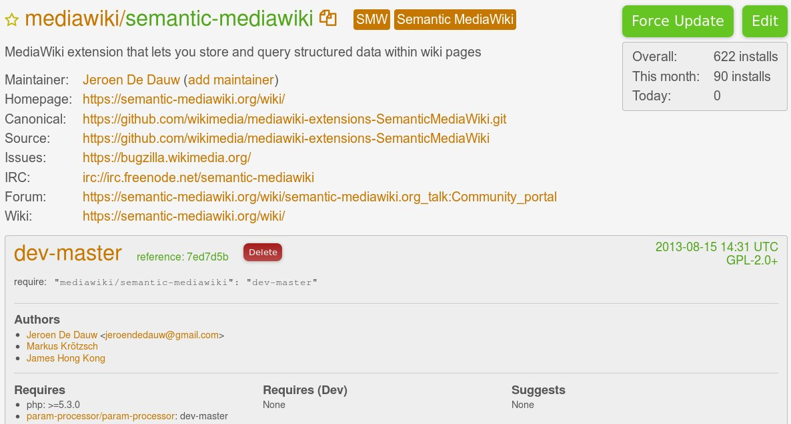

Yearly LolCats overview
Caturday will not be stopped!

Yearly SMW overview
Presentation by @JeroenDeDauw
bit.ly/2013-smw
SMWCon Fall 2013, Berlin
About me
- Jeroen De Dauw
- (S)MW dev since 2009
- Architect Wikidata at WMDE
- Domain layer guy
- Software craftsmanship
- Passion for interoperability and reuse
- Lolcats!
Overview
- Development
- Infrastructure
- Recap: SMW 1.8
- Next up: SMW 1.9
- Roadmap
Contributors
~20 developers, 68 total
"Large, active development team", top 10%
Maintainers: Markus Krötzsch, James Hong Kong & Jeroen
Commits
~1000 commits
 "Stable Y-O-Y development activity"
"Stable Y-O-Y development activity"
Lines of code
41k => 58k
 "Mature, well-established codebase"
"Mature, well-established codebase"
Infrastructure
Continuous integration
Tests running on Jenkins

Jenkins integration with Gerrit
TravisCI!

Coveralls.io support
Status badges
Composer support!
Packagist 
SMW 1.8
Compatibility
- Dropped support of MW 1.16
- Added support for MW 1.19 and 1.20
- Added support for PHP 5.4.x
- Added support for SQLite
- SQLStore3
- Special:Ask UI improvements
- Tooltip improvements
- Ask API: sorting and continuation
- ...
Query info now stored
- Property:Has query
- Property:Query string
- Property:Query format
- Property:Query size
- Property:Query depth
So you can query for queries! :)
The total number of queries
{{#ask:
[[Query size::+]]
|format=count
}}
Number of pages with queries
{{#ask:
[[Has query::+]]
|format=count
}}
# queries with format=count
{{#ask:
[[Query format::count]]
|format=count
}}
# pages with a query with size > 10
{{#ask:
[[Has query.Query size::>10]]
|format=count
}}
The 10 largest queries with their size and query string
{{#ask:
[[Query string::+]]
|?Query size
|?Query string
|sort=Query size
|order=desc
|limit=10
}}

SMW 1.9
Compatibility
- Dropped support of MW 1.17 and 1.18
- Added support for MW 1.21, 1.22
- Drop support for SQLStore2
- Drop support for PHP 5.2.x
- Added support for PHP 5.5.x
Special:Concepts
Special:Statistics
Special:Properties
Search form for user-defined properties
Special:SMWAdmin
New "smw-admin" rights for Special:SMWAdmin
#set_recurring_event now creates subobjects
ApiInfo (api.php?action=smwinfo)
Extension of available information
SMW\Api\BrowseBySubject (api.php?action=browsebysubject)
Access semantic data of a subject via the Api
Caching improvements
Caching support for Special:Properties, Special:WantedProperties, and Special:UnusedProperties
Concept cache display in each individual concept if available
When?
Q4 2013?
Beyond 1.9 (roadmap)
Some general directions
- Stability, extendability, maintainability and understandability
- Quality improvements, tests, clear boundaries and interfaces
- Less dependence on MediaWiki
- Interoperability and reuse
Ask library
- Reimplementation of Ask query language
- Clean standalone PHP library
- 100% test coverage
- Technical documentation
- JSON API
- Wikibase interoperability
- Visual query builder?
- ...
- SMW 1.10?
DataValues
- Reimplementation of SMW DataItems
- Clean standalone PHP library
- (100%) test coverage
- (Technical documentation)
- JSON API
- Interoperability with Wikibase & others
- UI editing widgets
- ...
- SMW 1.10?
Questions?
bit.ly/2013-smw
Your ideas and support are welcome!
Special:Links
Special:Attribution
- Slides: CC BY-SA 3.0, Jeroen De Dauw
- Slide engine: reveal.js, Copyright (C) 2013 Hakim El Hattab